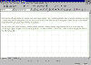

| ||||
In Lesson 1, you added text to your pages by typing it on the page using the FrontPage Editor. There may be times, however, when it will be easier to transfer content to your Web pages from other documents.
With the FrontPage Editor, you can insert the following types of text files into your pages:
The file you will insert in this lesson is a standard text file.
With the Tutorial Practice page still open in the FrontPage Editor, ensure the insertion point is at the top left of the page.
The Select File dialog box is displayed. The file you want to insert is named tutorial.txt.
C:\Program Files\Microsoft FrontPage\tutorial\
If you changed the default installation drive or folder during FrontPage Setup, you'll need to adjust this path accordingly.
FrontPage imports the contents of the text file and places it on the current page.

Click image to enlargeThe page is saved to the current FrontPage-based Web site.
Did you find this material useful? Gripes? Compliments? Suggestions for other articles? Write us!
© 1999 Microsoft Corporation. All rights reserved. Terms of use.